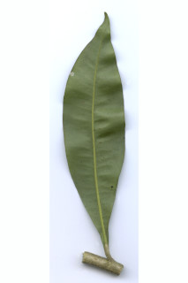
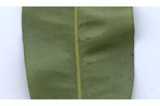
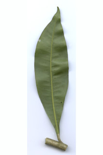
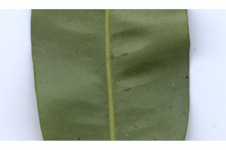

Images :
 





| Habit : | Small trees up to 6 m tall. |
| Leaves : | Leaves simple , alternate , spiral ; petiole 0.5-0.7 cm long, planoconvex in cross section, scaly when young; lamina 6-13 x 3.8-4 cm, narrow elliptic , apex acuminate with blunt tip, base cuneate , margin entire , transparent gland dotted; midrib slightly canaliculate above; secondary_nerves 16-20 pairs, slender; tertiary_nerves obscure . |
| Inflorescence / Flower : | Inflorescence axillary or lateral , few flowered cymes or umbels ; flowers white. |
| Fruit and Seed : | Berry , globose , red; seed one. |